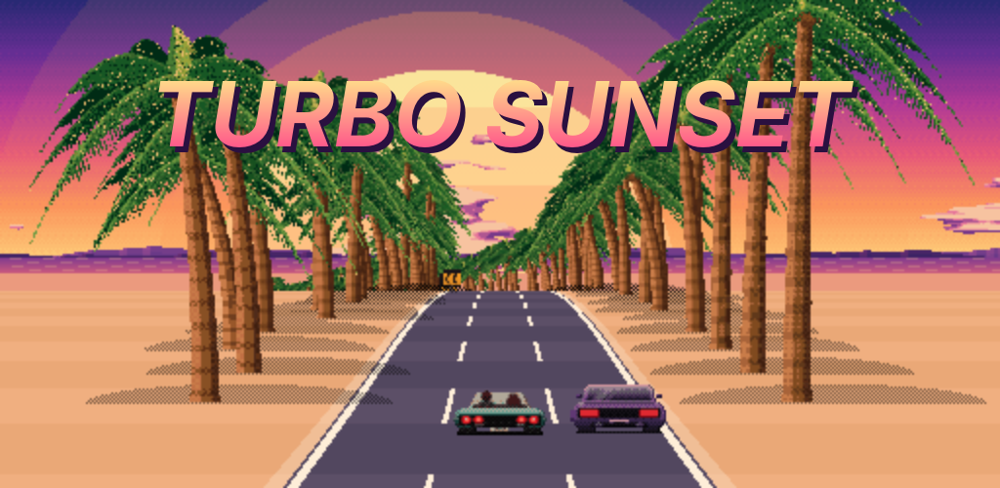

Turbo Sunset

Papel de parede animado para Android: uma viagem retrô sem fim, com fases que se misturam, nascer e pôr do sol reais e clima.
Quero testar antes do lançamento
Política de privacidade · labs@moskwen.com · Moskwen Labs

Papel de parede animado para Android: uma viagem retrô sem fim, com fases que se misturam, nascer e pôr do sol reais e clima.
Quero testar antes do lançamento
Política de privacidade · labs@moskwen.com · Moskwen Labs